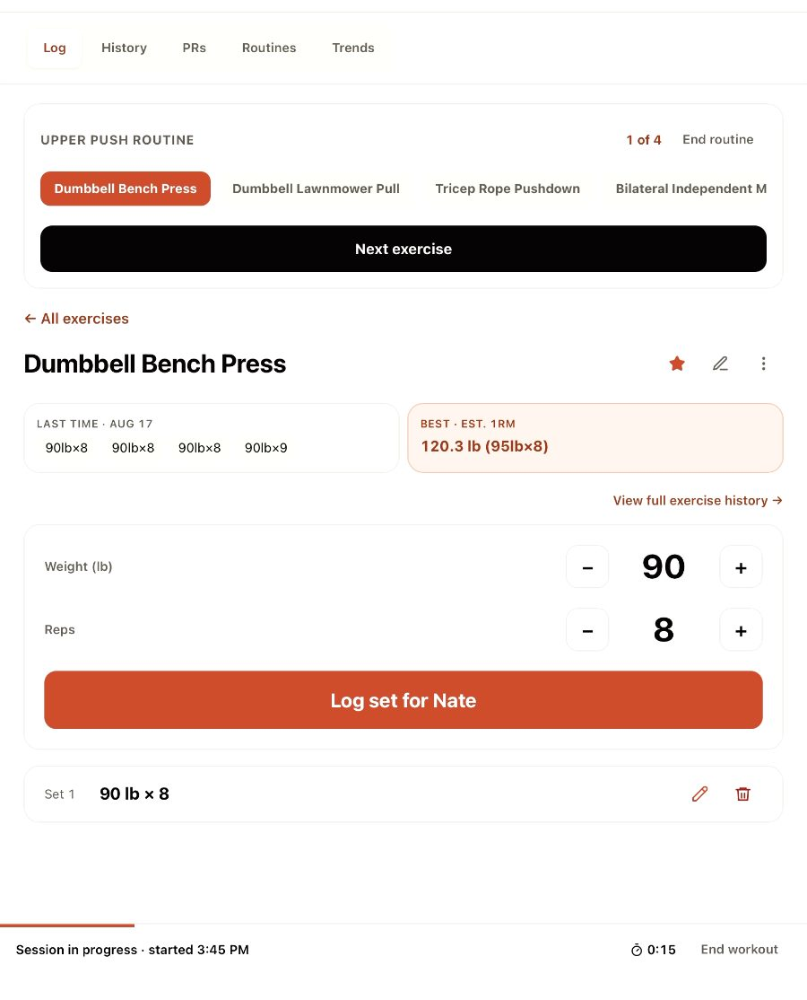
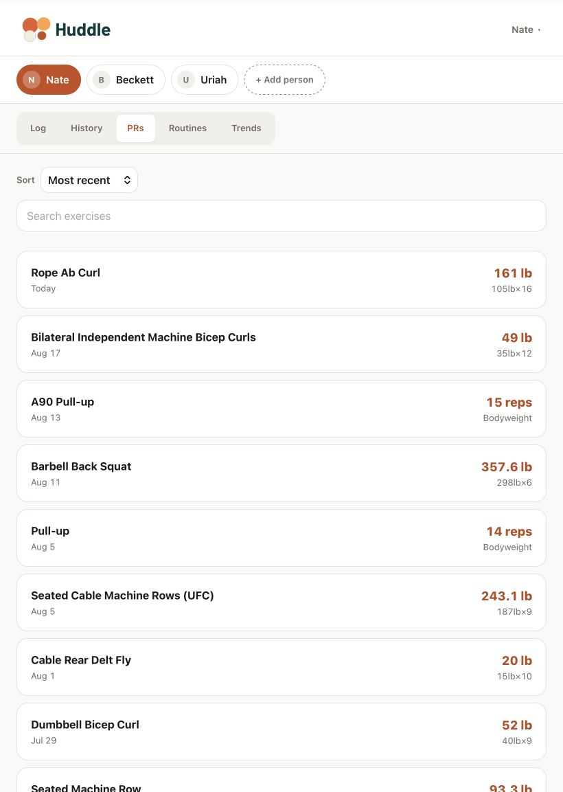
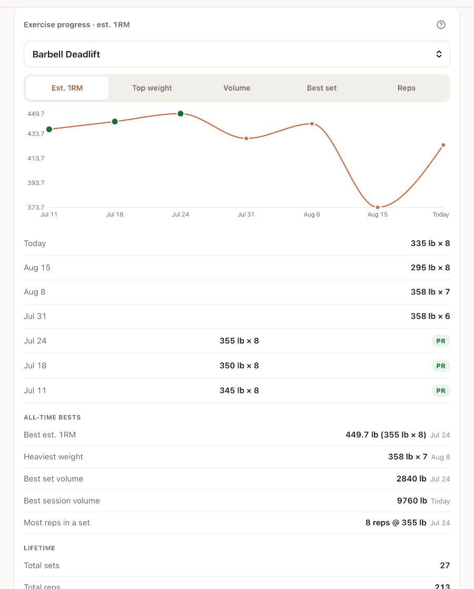
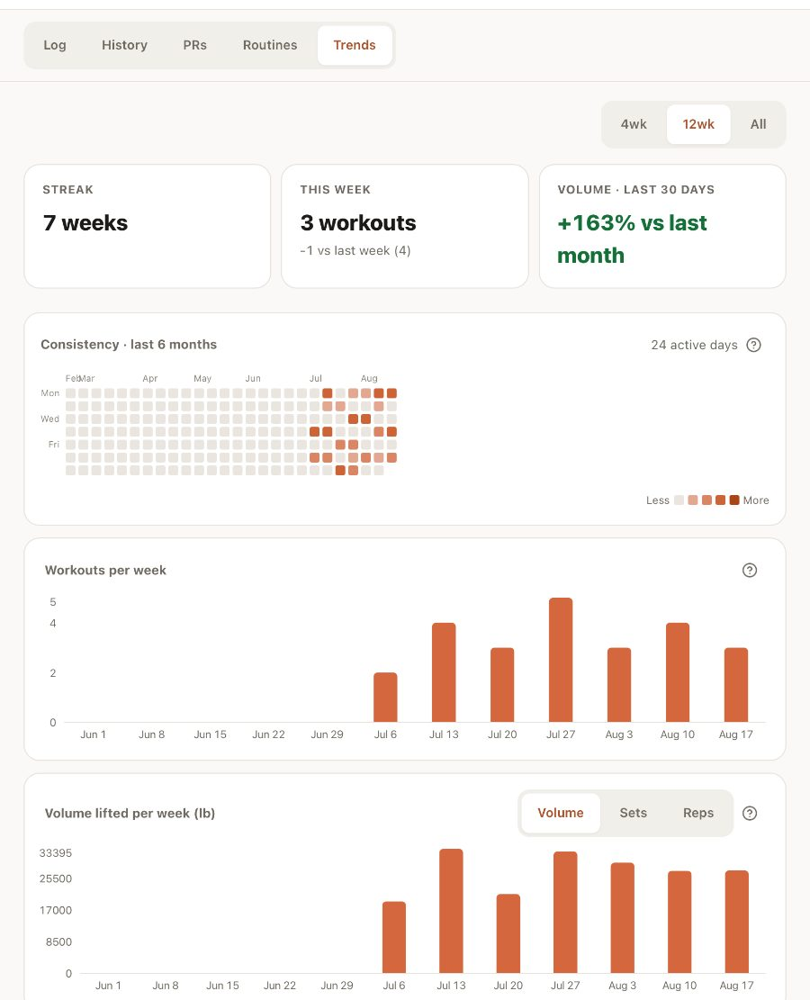

Easily switch between family members as you're working out together. Separate logs, history, PRs and rest timers.
Works even when your service is out. Sets, edits and notes save on the device and sync the moment you're back — and you can see exactly what's still waiting.
Big buttons, plain words, nothing to set up and nothing to learn. Whether it's your first workout or your thousandth, you tap a name and start lifting.
Weight and reps prefill from last time, so most sets are one tap and go. What you did last session sits right there on the screen — no digging through history to remember whether you hit eight or six.
Beat your best and you'll know about it.


Tap a name to switch. A green dot means someone has a workout going; a ring means their rest timer is still running, so you can see who's ready without asking.
Nobody's numbers get mixed up with anybody else's — and when someone breaks a record, it's right there on the screen you're all standing around.
Every set feeds a picture of where each person is heading. Personal records are recomputed from your actual sets, so correcting an old entry corrects the record too.


Most apps show a spinner and lose the set. Huddle writes every set, edit and note to the device first, then syncs when the signal comes back — in order, and without ever double-logging.
Your history, PRs and routines stay readable the whole time, for everyone in the house.
The log screen underneath stays fully usable the whole time.
Everybody in the house gets their own log, at no cost. Pay only when you want your whole history back — and out.
Your workouts are never deleted on Free. Older sessions are simply hidden until you upgrade — and they come straight back the moment you do.
No. One login for the household — everyone else is a profile you tap to switch. Their data stays completely separate from yours.
Yes, for logging — sets, edits, notes, favourites, new exercises. Setup changes like routines and adding people need a connection, and the app tells you so.
That's coming with Pro. Bring in all your past workouts and your trends, PRs and history fill in instantly — nothing to re-enter by hand.
Add it to your home screen and it runs full-screen like any other app, offline included. No app store, no updates to chase.
Nothing is deleted, ever. Free shows the last 90 days; Pro shows all of it. Subscribe and your full history is back instantly.
It was built for a dad and his sons sharing one screen in a basement. If that sounds like your house, it will fit.
Sign up with an email, confirm the code, add the people you train with. You'll be logging your first set in about two minutes.
Start free